# A tibble: 1,704 × 6
country continent year lifeExp pop gdpPercap
<fct> <fct> <int> <dbl> <int> <dbl>
1 Afghanistan Asia 1952 28.8 8425333 779.
2 Afghanistan Asia 1957 30.3 9240934 821.
3 Afghanistan Asia 1962 32.0 10267083 853.
4 Afghanistan Asia 1967 34.0 11537966 836.
5 Afghanistan Asia 1972 36.1 13079460 740.
6 Afghanistan Asia 1977 38.4 14880372 786.
7 Afghanistan Asia 1982 39.9 12881816 978.
8 Afghanistan Asia 1987 40.8 13867957 852.
9 Afghanistan Asia 1992 41.7 16317921 649.
10 Afghanistan Asia 1997 41.8 22227415 635.
# ℹ 1,694 more rowsGrammar of Graphics: ggplot2 paketi
alper yilmaz
2026-11-02
Verinizi görselleştirin!

Kaynak: https://github.com/stephlocke/datasauRus
ggplot paketi
- Oldukça esnek ve güçlü
- Tutarlı (grammar of graphics)
- Aktif olarak geliştiriliyor ve geniş kullanıcı kitlesi
- En başta biraz zor ama getirisi çok
Birçok kaynak mevcut
Cheatsheet
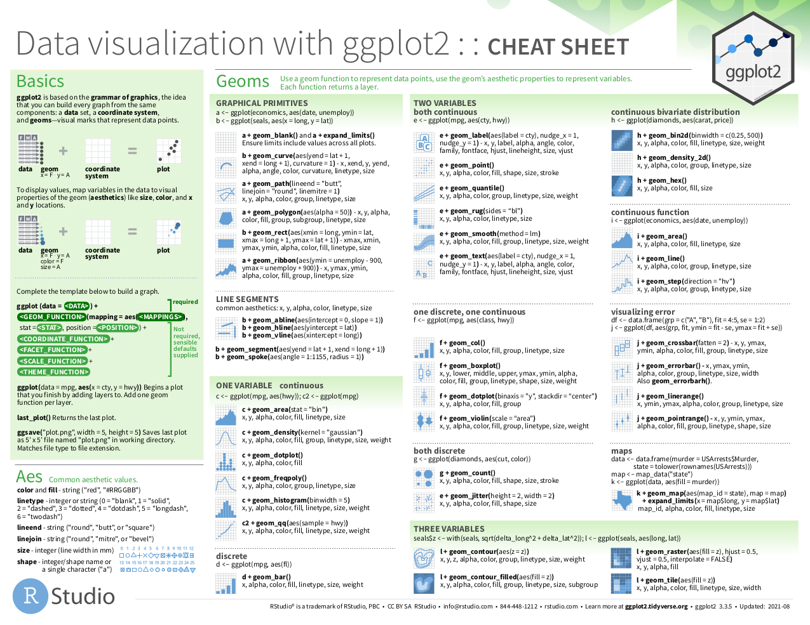
Kaynak: Rstudio ggplot2 cheatsheet
Veri tidy olmalı
- Her değişkenin kendi sütunu olmalı
- Her gözlemin kendi satırı olmalı
- Her değerin kendi hücresi olmalı

Kaynak: R for Data Science kitabı, Bölüm 12 Tidy Data
Kullanılacak paket ve veri
Gapminder veri setini kullanacağız
Amaç
Gapminder sitesindeki bu görsele yakın bir görsel çizebilir miyiz?
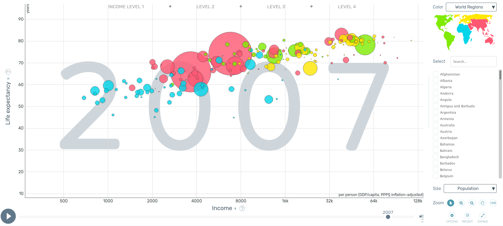
ggplot katmanları
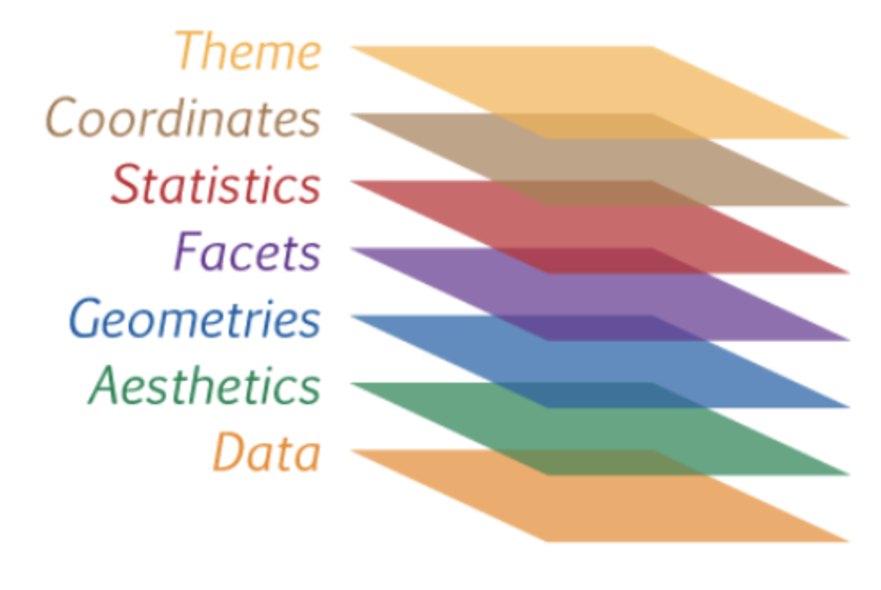
Scales, Geometry ve Facets arasında bir katman olarak sayılabilir.
İlk görsel
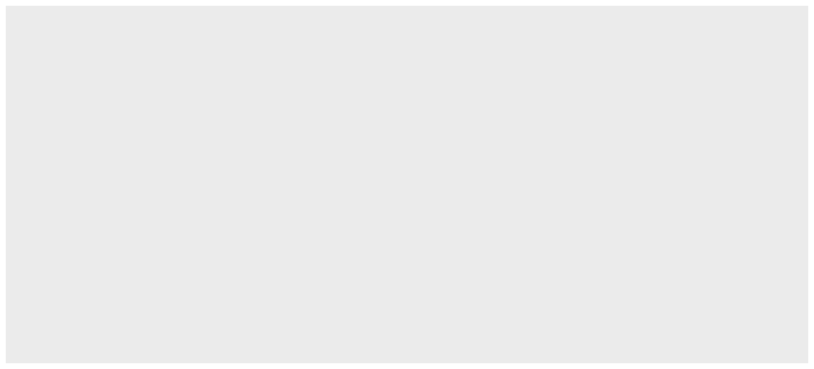
İkinci görsel / veri katmanı
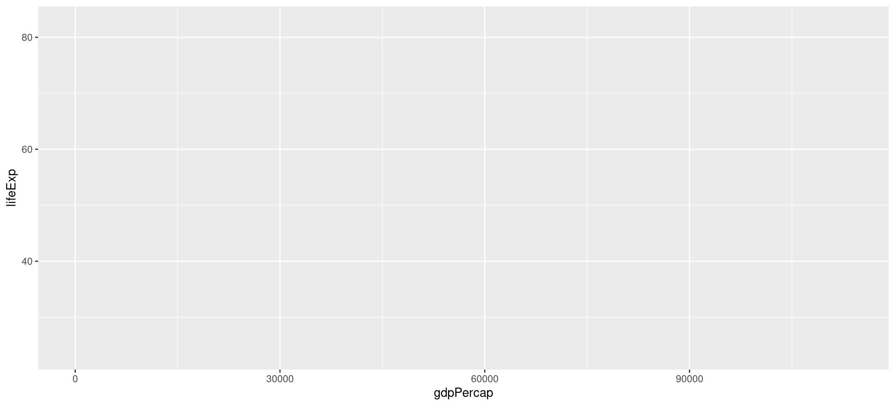
Veriyi x ve y koordinatlarına eşledik ama nasıl gösterileceğini belirtmedik (point, line, box, cirlce, vs.)
Aesthetics (aes)
Değişkenleri (age, distance) grafik elemanlara (eksen, renk) eşler
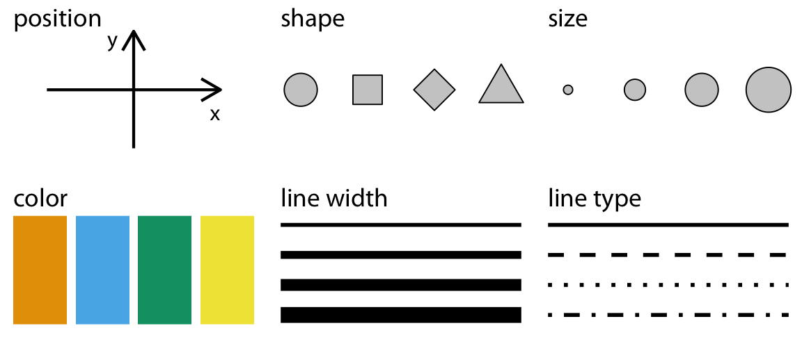
Deneme
Kaynak: Fundamentals of Data Visualization, Chapter 2 Visualizing Data
geomlar
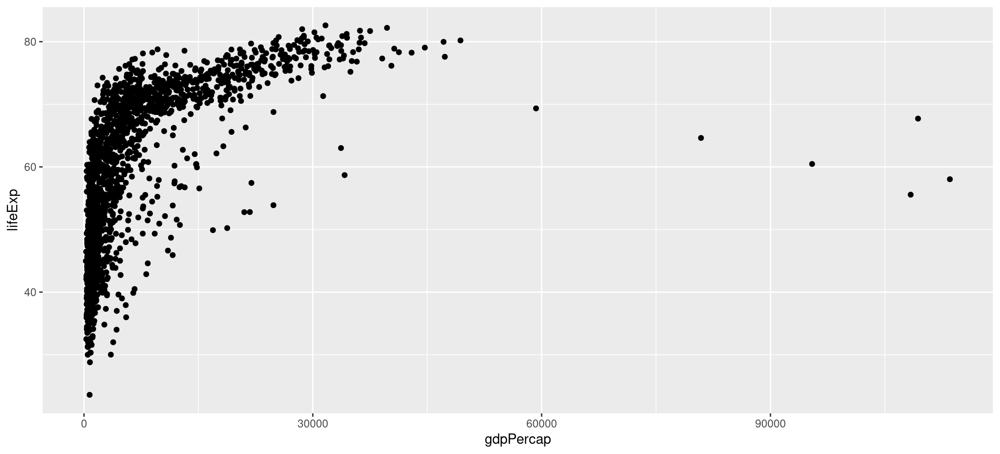
Tam liste R4DS kitabının ilgili kısmında ve data visualization cheatsheet sitesinde bulunabilir
Soru
- Sizce
geom_bar()vegeom_col()nasıl bir görsel üretir? - Eğer
geom_lines()ile çizgi çizmek istersek, veriyi yıla göre mi, ülkeye göre mi gruplamak gerekir?
İşlenmiş veri ggplot’a pipe ile iletilebilir
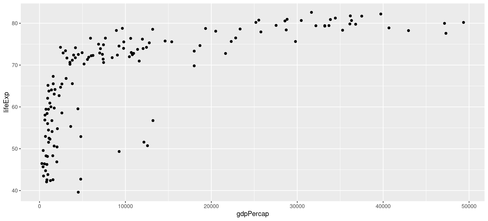
Note
O halde, bütün tidyverse fonksiyonları, pipe sayesinde ggplot ile birleştirilebilir!
Warning
Fonksiyonları birleştirmek için %>% veya |> kullanılırken ggplot katmanlarını birleştirmek için + kullanılır
Geom özellikleri
Geomların boyutu, rengi, şekli, genişliği ve saydamlığı (alpha):
- sabit bir değer olarak verilebilir
- ya da verimizdeki bir değişkene eşlenebilir
Tüm noktaların rengini değiştirme
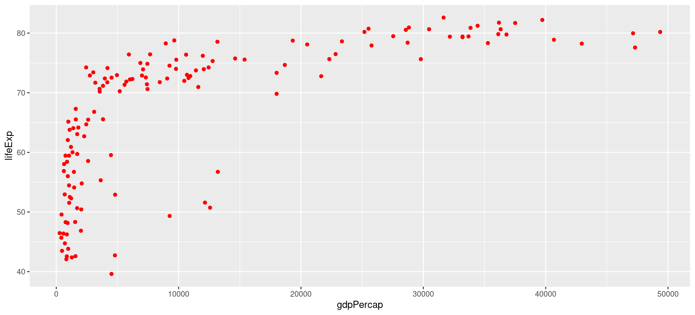
Rengi bir değişkene eşleme
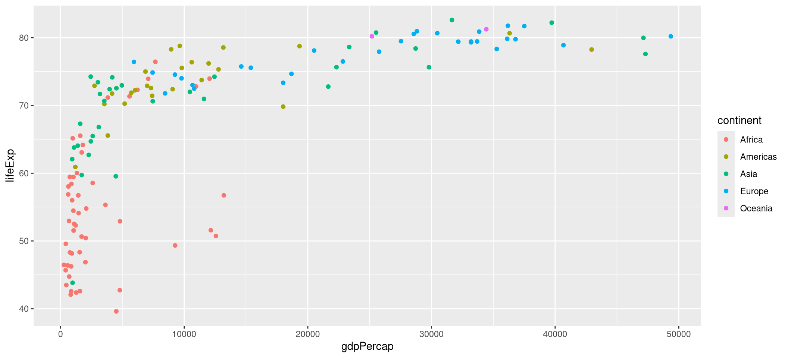
Renk: eşlemek vs. eşlememek
Eşlemeden (sabit değer)
vs. eşleyerek
Daha fazla özelliği eşleme
Rengi kıtaya (continent), nokta boyutunu nüfusa (pop) eşleyelim
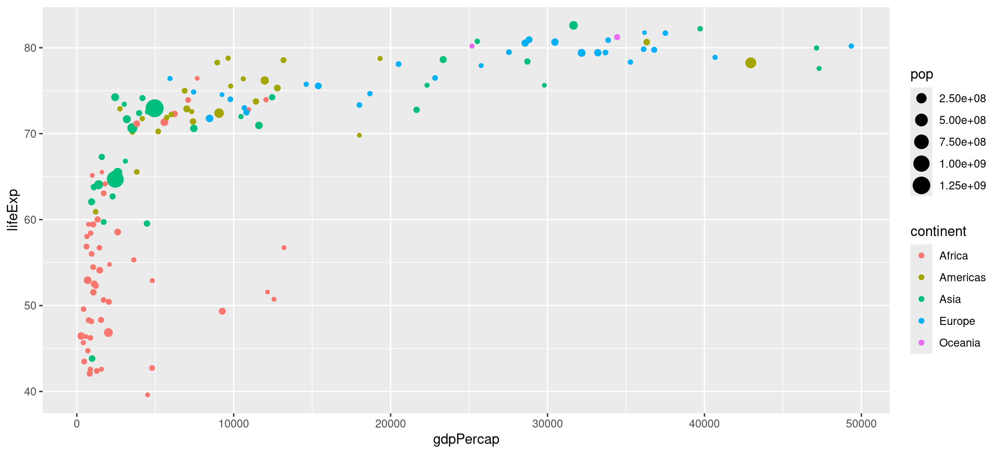
Eşlenen değerler ölçeklenebilir (Scales katmanı)
Ayrık değerlerin renkleri scale_color_discrete, scale_color_manual (ve daha birçok renk paleti paketi) ile düzenlenebilir
Sürekli verilerin renkleri scale_color_continuous, scale_color_gradient (ve daha birçok renk paleti paketi) ile denetlenir
continent ayrık, lifeExp ise sürekli bir değişkendir.
Rengi continent’e eşleyip renkleri değiştirelim.
Ayrık eşleme ölçeği
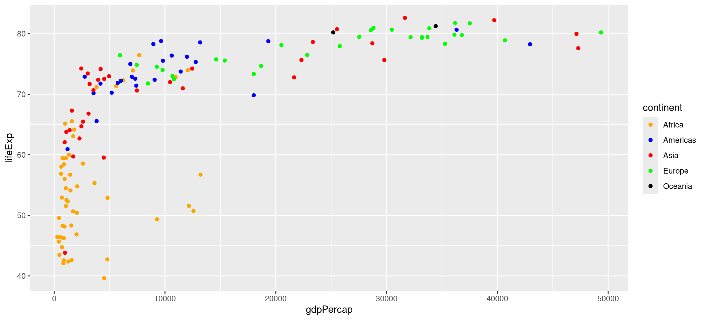
Sürekli eşleme ölçeği
Şimdi rengi lifeExp’e eşleyip renkleri değiştirelim.
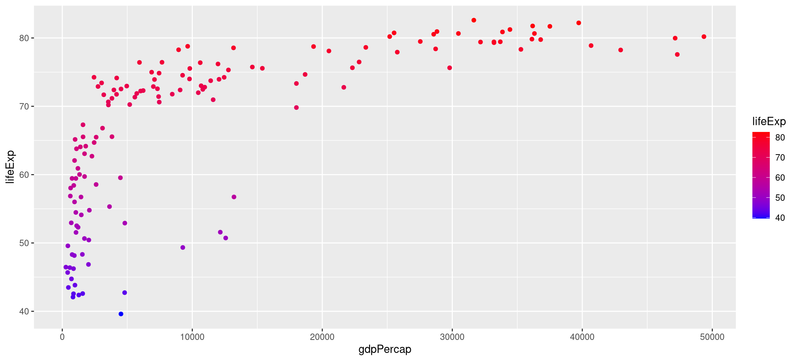
X veya Y koordinatlarının ölçeklenmesi
Pratik bir kural: değer aralığı çok genişse ve büyük sayılar sonuçları görmeyi engelliyorsa logaritmik ölçek kullanın. Ya mutate ile yeni bir sütun üretebilir ya da ölçekleme fonksiyonlarını kullanabilirsiniz. (scale_ yazıp Tab tuşuna basarak fonksiyonları listeleyebilirsiniz). Aşağıda gdpPercap verisini ölçeklemek için scale_x_log10() kullanıldı.
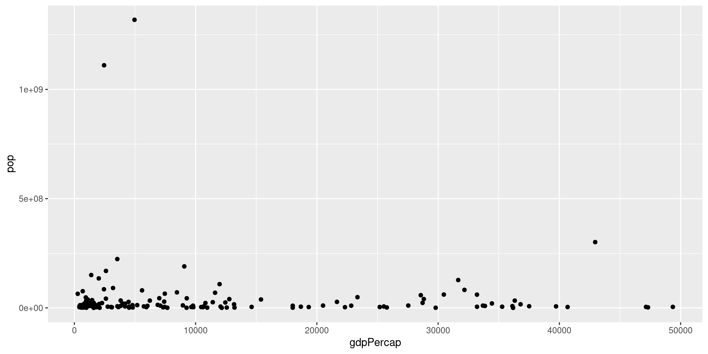
Soru
- Bir önceki görseli mutate kullanarak ( örn.
mutate(lifelog=log(lifeExp))) çizerseniz, Y eksenindeki sayılar nasıl görünür?
Birden fazla geom_point katmanı
ggplot çok güçlü ve esnektir. Farklı geomları birleştirerek özgün grafikler üretebilirsiniz. Nüfusu 100 milyondan fazla olan ülkeleri renklendirip vurgulayalım.
Bu ülkeleri içeren ayrı bir veri çerçevesi oluşturup bu ülkeleri ayrı bir geom_point katmanı olarak çizeceğiz.
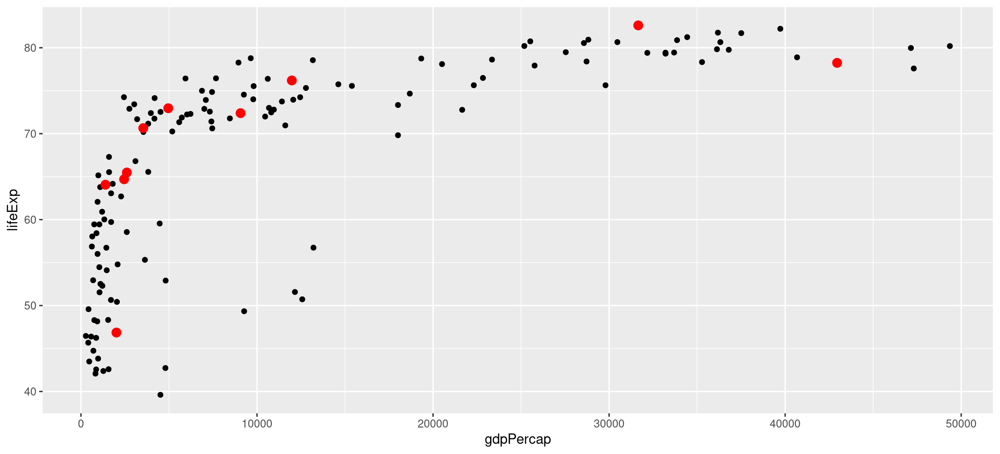
Egzersiz
Siyah noktaları size=3, kırmızı noktaları size=1 şeklinde çizdirin. Katmanları ayırt edebiliyor musunuz?
Facet katmanı

Sorular
- x ve y eksenleri için varsayılan (ve doğru) limitler “not free”dir. “free_x”, “free_y” veya her ikisi birlikte olursa ne olur?
- Yaşam beklentisi ekseninin 0’dan (en küçük değerden değil) başlamasını nasıl sağlayabiliriz?
İstatistiksel özet katmanı
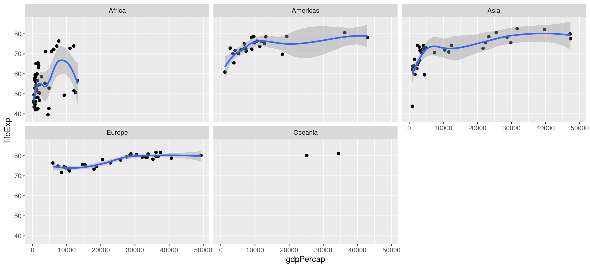
Tema katmanı
Grafiğinizin neredeyse tüm özelliklerini theme() fonksiyonuyla özelleştirebilirsiniz. Aynı anda birden çok özelliği değiştirerek grafiğin görünümünü değiştiren theme_* fonksiyonları da vardır.
Grafiğimize theme_classic() uygulayalım (sonuç bir sonraki slaytta).
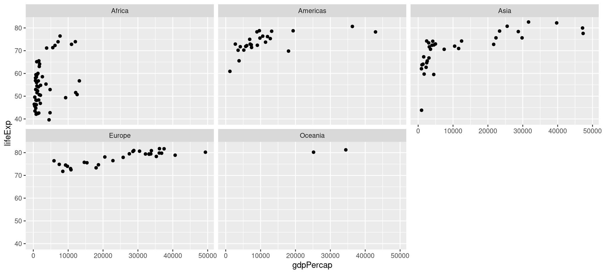
Tema paketleri
Popüler kaynakların temalarını uygulamak için kullanabileceğiniz birçok tema paketi vardır. Tek satır kodla grafiğinize The Economist temasını uygulayalım
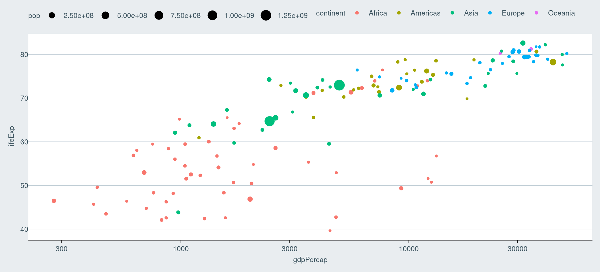
Başlıklar
labs() fonksiyonu başlık ve alt başlık eklemek, X ve Y eksen etiketlerini değiştirmek için kullanılabilir. Aşağıda grafiğe şu katmanı ekledik
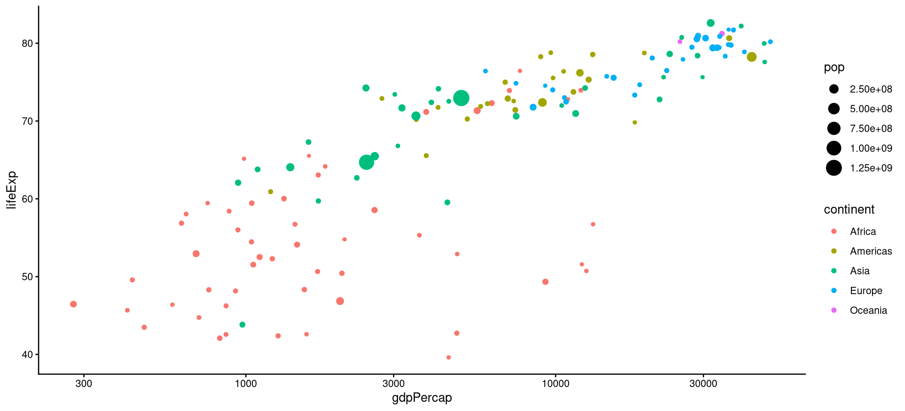
İnteraktif HTML çıktısı
Çıktınıza HTML uyumlu grafik/tablolar ekleyebilecek birçok paket vardır. Aşağıdaki kod plotly paketiyle etkileşimli bir grafik üretir. Sonuç için bir sonraki slayta bakın.
Üzerine gelerek (hover) inceleyebilir, yakınlaşıp uzaklaşabilir ve bölgeler seçebilirsiniz.
library(plotly)
gap_plot <- gapminder |>
filter(year=="2007") |>
ggplot(aes(x=gdpPercap, y=lifeExp, color=continent)) +
geom_point(aes(size=pop)) +
scale_x_log10() +
theme_minimal()
# width/height pinlenmezse plotly her slayt geçişinde konteyneri yeniden ölçüp
# küçülür (revealjs transform'u ölçeklenmiş boyutu geri besler)
ggplotly(gap_plot, width = 1008, height = 595)ggplot görselleri birer nesnedir
Grafikleri bir nesneye (programlama terimi olan object=nesne) atayıp sonra yeniden kullanabilirsiniz. Var olan bir grafiğe katman da ekleyebilirsiniz. Bir grafik oluşturup onunla farklı temaları deneyelim.
ggplot görselleri birer nesnedir

Grafiklerin nesne olması, bağımsız grafiklerden bileşik figürler oluşturmaya da olanak sağlar. patchwork ve cowplot paketlerine göz atın.
Görselleri kaydetme
ggsave() fonksiyonu ürettiğiniz grafikleri kaydetmek için kullanılır. Grafikleri PNG, PDF, SVG formatlarında kaydedebilir. Yüksek kalite/çözünürlüklü görseller için görüntünün çözünürlüğü ve boyutu ayarlanabilir.
Özelleşmiş bir görsel
Türkiye’nin yıllara göre değişimini gösteren, OECD ortalamasını yatay çizgi olarak ekleyen ve The Economist temasını kullanan özel bir grafik çizelim. Üstüne bindireceğimiz veriyi hazırlayalım:
gapminder |>
filter(year=="2007") |>
ggplot(aes(x=gdpPercap, y=lifeExp, alpha=year)) +
geom_smooth() +
geom_point() +
scale_x_log10() +
geom_point(data=milli, color="red") +
geom_hline(data=oecd_data,
aes(yintercept=life_mean),
color="gray",
linetype="dashed") +
geom_text(data=etiket, aes(label=country)) +
facet_wrap(~continent) +
ylim(0,100) +
theme_economist()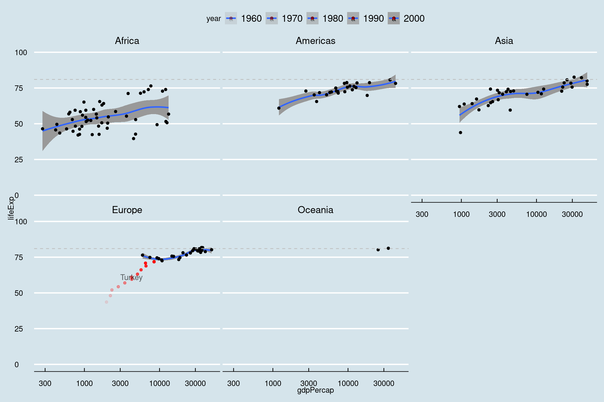
Galeriler
Github’daki awesome-ggplot2 reposu kapsamlı bir kaynak listesidir
R Graph Gallery kategorilere ayrılmış halde mümkün grafikleri gösterir
ggplot oldukça esnek bu yüzden çok özelleşmiş grafikler hazırlamak için kullanılabilir. Aşağıdaki kullanıcılar ggplot ile oldukça güzel grafikler hazırlamışlar (Bazı kullanıcılar için ayrı klasörlere bakmanız gerekebilir)
Cédric Scherer ggplot ile profesyonel düzeyde grafikler yapıyor. Galerisine göz atın (R kodu için ayrı klasörlere bakın) Bu tasarımcı tarafından çizilen kahve puanlamasına dair grafiğin detayları için kahve sayfasını ziyaret ediniz.
Tanya Shapiro https://github.com/tashapiro/TidyTuesday
Christophe Nicault https://github.com/cnicault/tidytuesday
Georgios Karamanis https://github.com/gkaramanis/tidytuesday
Biyoloji ve biyoinformatik ile ilgili ggplot paketleri
ggbio

Kaynak: ggbio sitesi
ggenomes

Kaynak: gggenomes sitesi Bu paket, geom_seq(), geom_gene() gibi katmanlar kullanır
ggtrees / ggtreeextra
ggmsa
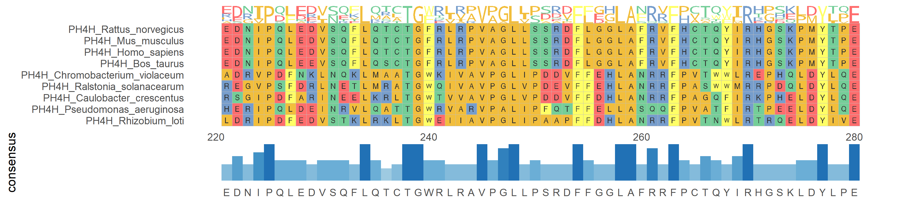